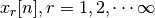
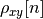

Todo
DEMANDER UNE VM pour JUPYTER HUB important
Todo
have a look to repl…
2. Lab 1 - Correlation¶
2.2. Theoretical part¶
Correlation is a technique which aims to point out the similarity between signals or the degree of similarity between a signal and itself. This approach is very useful in the following domains :
In one dimension
Radar
Speech analysis
In two dimensions
Flow measurement
Pattern recognition

Car’s Rear light detection by using normalised cross-correlation (TNormXCorr2.m).
The strength of these approach is a very high robustness to noise.

2.2.1. White and colored noise¶
A pseudo-white noise is obtained by using random generators. Note that white refers to the signal memory or correlation whereas uniform or Gaussian refers to the amplitude distribution. Next figure describes a uniform distributed white noise and a Gaussian distributed white noise :
Uniformly distributed white noise signal, distribution and auto-correlation (a, b, c), Ibid with a Gaussian distribution (d, e, f) (TWhiteNoise.m).
To color a white noise means to introduce structure in a non structured signal is obtained by FIR or IIR filtering.
 is the Kronecker symbol
is the Kronecker symbol transfer function
transfer function )
)2.2.2. Auto-correlation¶
In this case, the goal is to compute the degree of similarity between the signal and itself. It gives an indication about the colorness of a signal, a white noise being theoretically totally un-correlated whereas a colored signal exhibits a stronger auto-correlation.
2.2.2.1. Difference between correlation and convolution¶
2.2.2.2. True auto-correlation¶
The true auto-correlation function is a mathematical concept that can not be computed because it requires an infinite number of realisations of the signal . It is defined as :
(8)¶
where  denotes the expectation and
denotes the expectation and  is called the
Lag. Because of the infinite numbers of realisations required, only
correlation estimators can be computed.
is called the
Lag. Because of the infinite numbers of realisations required, only
correlation estimators can be computed.
2.2.3. Cross-correlation¶
In this case, the goal is to compute the degree of similarity between a signal and another one, a pattern for example.
2.2.3.1. True cross-correlation¶
The remarks about the true auto-correlation function applies equally here.
(12)¶
2.2.3.5. Coefficient of correlation¶
This coefficient goes from -1 (anti-correlation) to 0 (no correlation) to 1 (full correlation)
(16)¶
2.2.3.6. Normalized cross-correlation estimate¶
This correlation signal goes from -1 (anti-correlation) to 0 (no correlation) to 1 (full correlation). In this case, the pattern to be correlated with the signal has as smaller extent, that is .
(17)¶
Note that  is the mean of the pattern , but
is not the mean of the signal because
depends of the lag and is computed for any
displacement of the pattern in the signal.
is the mean of the pattern , but
is not the mean of the signal because
depends of the lag and is computed for any
displacement of the pattern in the signal.
2.2.4. 1 bit correlator¶
In some time critical applications, it is wise to replace the time consuming product by a sum or subtraction, depending on the sign of one of the 2 signals to be correlated. This is called 1 bit correlator.
Todo
explain when using Biased auto-correlation, Unbiased auto-correlation, Biased auto-covariance, Cross-correlation, True cross-correlation, Biased cross-correlation, Coefficient of correlation, Normalized cross-correlation, 1 bit correlator.
2.2.5. Correlation theorem¶
The correlation theorem states that
(18)¶
Where :
- The demotes the Discrete Fourier Transform of
The star symbol denotes the complex conjugate
is the circular correlation between the
 and
and
 sequences
sequences(19)¶
with
Next figure illustrates this theorem by computing the auto-correlation of a white noise Gaussian distributed signal having 200 samples. Three methods are compared :
- By using the biased estimate without normalisation
- By using the circular correlation without normalisation
- By using the Fourier approach

2.3. Practical part¶
This is the list of the proposed correlation exercices
- Toy example
- Frequency estimation of a sine wave
- Signal detection of a signal burried in noise
- Search of a sub-string within a string
- Piano tone detection
2.3.1. Toy example¶
With pencil and paper, compute by using (9). Next figure describes the Matlab answer (xcorr) to this problem. As a conclusion, we see that Matlab has a different definition of the correlation (time reverse).
2.3.2. Toy example for normalised cross-correlation¶
The normalised cross-correlation should be -1 everywhere because, although the slope and offset are different, the signals and the template anti covariate.

The template (a), the signal (b), the normalised cross-correlation coefficient  (c) (CorrelationCoefficientToyExample.m).
2.3.3. Frequency estimation of a sine wave¶
2.3.3.1. Context¶
It happens that, if , the corresponding auto correlation function is given by :
So, to detect the frequency of a sine wave, the procedure is the following :
- Compute the auto-correlation.
- Compute the location of the second peak, the first, at , containing the energy of the signal
 .
. - Compute the frequency
 (TDetectSineFreq.m).
(TDetectSineFreq.m).{kind=link}
{kind=link}
{kind=link}
{kind=link}
{kind=link}
2.3.3.2. Software application¶
- Start the jupyter environment
- Copy this
templateinto the working directory
Download the template and copy it into the working directory and rename it tolabo01.ipynb.
- Start the jupyter notebook :
Then select and open the file
labo01.ipynb.